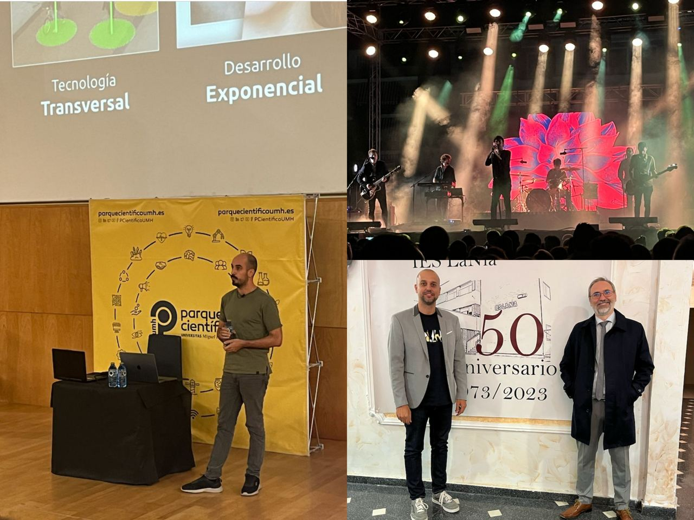

NoSqlOctober¶
Octubre, en mi caso, es sinónimo de NoSQL. Es el primer bloque que imparto los últimos cursos, y el año pasado ya reescribí todos los apuntes que en su día hice para la Universidad de Alicante para el Curso de Experto en Java Enterprise.
Le estoy dando un repaso a la apariencia general de los apuntes, con la inclusión de tags en cada sesión, y esperando que Material for Mkdocs llegue a la siguiente franja de financiación (14.000$) para habilitar los grids y organizar visualmente mejor los bloques.
A nivel de apuntes de NoSQL podemos resumir los cambios en:
- Escritura desde casi cero de la sesión de Rendimiento, centrada en el uso de índices y colecciones limitadas
- Añadidas nuevas consultas más sencillas en la sesión de contacto con MongoDB para que las primeras sean más fáciles.
- Re-escritura de la sesión de Modelado documental, ampliando un poco el apartado de validadores y poniendo un nuevo ejercicio para pasar de un modelo relacional a un modelo documental.
Respecto a la PD y las UT, he podido añadir tres unidades más mías (mis compañeros igual). Más o menos he tardado dos tardes completas por cada unidad de trabajo, lo que hace que no pueda avanzar preparando materiales ni preparar clase. Podríamos decir que ya tenemos el 70% del documento finalizado.
De todo lo planificado me he quedado a menos del 50%, pero es que han surgido tantas cosas que el backlog no ha dejado de crecer ningún día.
Proyectos de innovación¶
Aunque todavía no ha salido la resolución para los proyectos de innovación del MEC, le hemos seguido dedicando mucho tiempo.
Del proyecto Lara recibimos una notificación de que nos faltaba algún documento por entregar y que había unos nuevos por firmar. Mucha burocracia. Seguiremos esperando. El profesorado coordinador ya nos hemos reunido, con sendas visitas al IES Victoria Kent de Elche y al IES Gran Vía de Alicante para contarles los avances de Lara y en qué nos pueden ayudar, así como dar una pequeña charla al alumnado participante en el proyecto y la IA.
Respecto al PIAFP Autoponic, tras un par de reuniones online, ya hemos planificado el arranque y nos vamos a centrar en la primera evaluación en preparar la arquitectura de recogida de datos con NodeRed y MongoDB, y vamos a investigar en la creación de un bot de Telegram para recibir imágenes del cultivo y almacenarlas etiquetadas en S3.
La EOI y la vida¶

Me las tenía yo muy felices con la Escuela de idiomas y el C2 de valenciano. Como todo nivel C2, se pide mucho. Y yo hace mucho que no estudio temas lingüísticos/gramaticales, ergo me estoy poniendo las pilas a marchas forzadas.
Le estoy dedicando mucho más tiempo del que pensaba inicialmente, pero en clase me lo paso bien, y me viene bien para no estar pensando el 100% del tiempo en informática. Además, me obligo a caminar, 30 minutos de ida y otros 30 de vuelta.
Ah, y no dejamos el ocio de lado. Pude ver, antes de que se retiren, a Second en las fiestas de Crevillente, he salido un par de días con mis amigos, una vez por semana con la bici para sudar y hacer ejercicio, un par de videojuegos cortos que salían de GamePass e incluso disfrutar de una charla de IA en la UMH con el gran Carlos Santana (no era el guitarrista) .
Y puede que lo mejor del mes fuera celebrar el 50 cumpleaños de la que fue mi casa durante más de una década.
Lo que me espera¶
Noviembre viene con mucho trabajo. Tras acabar el bloque de MongoDB (a mitad de mes) seguiré con el bloque de Cloud con AWS, así que sí o sí me tengo que poner con el curso de AWS Academy Data Engineering dentro de AWS Academy y quiero empezar a preparar material sobre el modelado y diseño multidimensional de los lagos de datos.
Así pues, para este mes, toca:
- Finalizar el curso de AWS Academy Data Engineering dentro de AWS Academy.
- Terminar las unidades de trabajo del curso de especialización de IABD (me quedan los bloquee de Fine-Tuning, Tratamiento de audio y Flujos de datos)
- Comenzar la sesión de Modelado multidimensional para el bloque del Ecosistema Spark y posteriormente implementar alguna solución con Delta Lake (La clase está planificada para mitades de febrero, pero esto va a ser completamente nuevo y quiero prepararlo poco a poco)
- Escribir un par de redacciones en valenciano para la EOI
Seguiremos informando.
PD. Hemos comprado el Spiderman 2 de PS5 que le tengo una ganas enormes, pero para jugarlo mal y dejarlo apartado, me lo guardo para las navidades. Mi hijo le está dando y le tengo envidia ;)